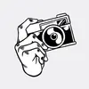
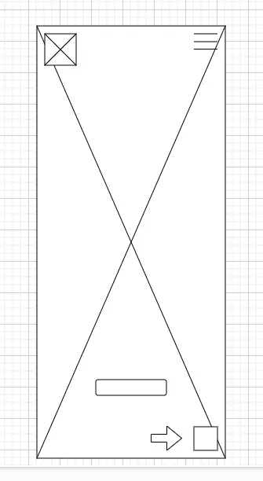
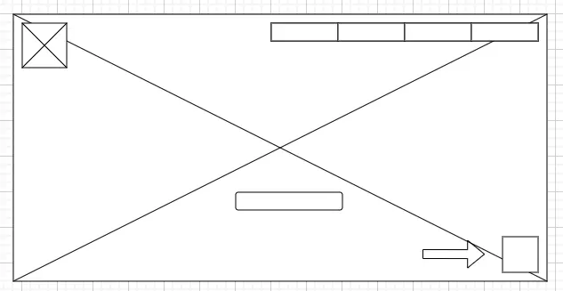

Purpose
To enable students learn photography, know the various techniques, and be creative with professional and smartphone camera. The club will help its members to network and be exposed to the professionals in the field, and most especially, see, treat and advocate nature with more compassion.
Audience
The club's audiences are the students to whom the learning of photography is paramount, the professional photographers from whom most of the club's knowledge and skills of photography will come, and all other observers of nature to whom the photo galleries and techniques of photography are made.
Branding
Website Logo
Style Guide
Color Palette
Palette URL: https://coolors.co/palette/ffffff-c2c2c3-79797c-27272b| Primary | Secondary | Accent 1 | Accent 2 |
|---|---|---|---|
| ffffff | c2c2c3 | 79797c | 27272b |
Typography
Heading Font: "Bad Script"
Paragraph Font: Comfortaa
Other Font: Barlow
“Normally, the best photos are arrived at not by coincidence” --Paul Goldstein
Colored paragraph example
“It all ultimately comes down to showing respect to nature and understanding the species you want to photograph” --Riddhi Mukherjee
Navigation
Site Map
Scenarios
What do I gain in being a member of the club?
What are the requirements for becoming a member?
Will I have the time for my academics while actively participating in the club?
How does my being a member contribute to nature?
Are there other offerings apart from photography and nature?
Can I hold a position in the club?
As a student, can I rather be an observer member than a regular one?
How can I participate as an observer?
Are there levy to be paid by members?
How effective are the the workshops and seminars organized by the club?
Wireframes
Create two wireframes for the site. One for mobile and the other for larger screen.
Home Page
Wireframe for mobile.
Wireframe for desktop.
